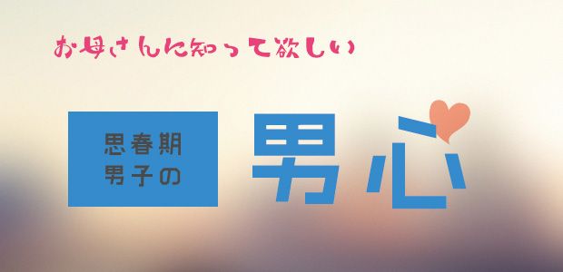

男の子は意外と繊細で傷つきやすい。
そこには大人になりきれない自信のなさ、まだ甘えていたいがさすがにその気持ちは外に出せない。思いを伝えようとしても言語化できない。
思春期男子の心理にはこのような屈折があり、その辺が女親には分かりにくい、扱いにくいところではないかと思います。
今回はそんな男の子の「屈折」について話をしようと思います。
だいぶ昔ですがA君という中学生の男の子がいました。野球部のエースで市内大会で優勝し、高校の有力チームからも誘われるほどの実力の持ち主で、女の子にモテるし塾でもトップクラスでした。
しかしこのA君、何が気に食わないのか授業中はいつもムッツリ不機嫌そうで指名してもかったるそうに「ア～ン？知らねえよそんなモン」みたいな態度でヤル気を見せない。
私も彼の態度にキレ気味で「おいA、聞いてんのか。ちゃんと答えろ」とよく注意しました。
その都度A君は上目使いにこちらを見てからソッポを向き「チッ」と舌を鳴らすのです。
マァ、A君とはその後も色々すったもんだありました。
塾のドアを蹴破って穴を空けたり志望校がコロコロ変わって私を怒らせたり…と。
そんなある日、A君のお母さんが私を訪ねてきて言います。「ウチの子、管野先生が話をしてくれないと落ち込んでいるのですが…」
実はA君、将来を考えたら地元の進学校のT高校に行って大学目指すと言っていながら、ある野球名門校の監督が自宅まで菓子折り持って来て「一緒に甲子園目指そう！」と口説くと、一転その気になったらしいのです。
志望校変更それ自体はよくあることです。しかし彼の場合はこれで3度目で、妙にウジウジと迷っている。で、私は「自分が本当はどうしたいのかよく考えなさい。その上でちゃんと決心したらそれでいい。それまで君と面談はしない」と言ったのです。
（甲子園という殺し文句に乗ってしまうのも現実的とは思えない気がしましたし）
それがA君には「見放された」ように感じたのでしょう。お母さんに泣きついたわけです。
日頃イキがっているA君が「話をしてくれない」とすねているわけで、何か可愛いかったですね。
この例のように、男の子は自分の気持ち、本心や迷いを素直に口に出せないのです。
A君も本当は「先生、どうしたらいいのでしょう」
ただそう言えば良かったのです。
しかしそれができない！
ぶっきら棒で、言葉が足りない。
結局A君は野球名門校に進学。ただし1つ条件をつけました。
「君は塾でトップクラスにいたんだ。そのプライドを見せろ」と、スポーツ推薦ではなく一般入試で受験するよう約束させたのです。
マァ、私なりに彼の将来を思ってのことです。
彼の学力なら一般入試でも合格は確実でしたが、一応実力で入学した形をとりたかったわけです。男のプライド…？ですね(笑)
ただ、2年後ホントに甲子園に出場したのには驚きましたが…。
「出場」を報告に来たA君は、中学生のときとは違い日に焼け、さわやかな好青年に変身していました。
不良少年の本心
A君などはヤンチャ系中2病(笑)としては、マァ普通の方です。
もっと重症の子もいます。
B君という子がいました。彼は中学受験に失敗すると明るく無邪気だった小学生なのに、暗くよどんだ不良系中学生(笑)に変ぼうしました。
中2になると勉強はまったくヤル気なし。宿題もいいかげん、授業中もずっと隣に話しかけるなど態度も最悪。
何度叱っても反省なし。ついには塾の階下のコンビニ前で飲酒して、講師に引きずられて来ました。
本人をこっぴどく叱りつけて帰し、すぐお母さんに連絡をとりました。そこで驚愕の事実が…。
B君はこの少し前、学校で窓ガラスを故意に割りその上教師に暴言を吐いた。それだけではありません。
近所の商店で万引きが発覚し店員に取り押さえられたというのです。
幸い2つとも「事件化」は免れたとはいうものの、お母さんのショックは相当なもので「私の育て方が間違っていたんでしょうか」と泣くばかり。
その後も卒業までB君と我々の格闘（？）の物語（ストーリー）は続くわけですが、今回は省略します。
結局B君はどんな問題を抱えていたのでしょう。1つは兄たちの存在。B君の2人の兄は大変秀才でスポーツ万能。絵にかいたような「良い子」たちで各々超有名校に進学していました。
B君は、この兄たちと比較されることを内心非常に恐れていました。
兄たちも同じ塾に通っていたので、親のみならず塾の先生たちも比較しているのではないかと恐れたのです。
そして中学受験に失敗した経験から、再び高校受験で失敗することも恐れていたのです。
兄たちと同じ土俵に上がりたくない。勉強と言うフィールドで勝負するのではなく、別のフィールドで。それがつまり飲酒であり暴力行為であり万引きだったのです。
もう1つは父への反発。
B君のお父さんは「こうすべき」「ああすべき」という自分の信念を、わりと一方的に押し付けるタイプでそれはお母さんもよく分かっているようでした。
事実お父さんはB君に「地元の公立トップ校以外は一切受験してはならぬ」と命じ、それもB君の心に重くのしかかっていました。
しかしこれら2つの悩みは、それほど大きなものではないと思います。
第3者的に見れば「2人の兄と比べられている」ことはB君の思いこみで被害妄想に近いものだし、「頑固オヤジのプレッシャー」も彼が感じるほどのものではありません。
実際、私が頼むとお父さんは「他校受験」をあっさり認めてくれました。
ただ、そうは言ってもB君の心の中ではこれらは十分大きな悩みだったのです。
中学受験失敗で自己評価を大きく下げたB君にとって、そんな自分が「認められているのか」「愛されているのか」という不安はとてつもなく大きいものでした。
本心では、彼は両親を愛していたし塾のことも大好きな優しい子だったのです。
それだけに「自分の存在を認めて欲しい」欲求は人一倍強かったと言えます。
「これ見よがし」に繰り返される彼の問題行動も、大人の愛情を試すためのものでした。
何て面倒くさい！
何て幼稚なのだ！
バッカみたい…
たいていの女性はそう思うでしょう。
多くのお母さんたちは「ウチの息子がこんな問題児だったら絶対イヤ！」と感じるでしょう。
ですが、A君、B君のような心の屈折という迂回路を経てあちこち頭をぶつけながら成長するのが、思春期男子の特徴であると理解して欲しいものです。
2人もそうでしたが、この時期の男の子は見かけと違いかなり神経過敏で傷つきやすい。そしてそのことを言葉で表現できず別の形で訴える。時には過激に。時には暴力的に。時には閉じこもる形で。
しかし人生の早い時期（思春期）に、親を心配させた子ほど不思議と大人になってから大きく飛躍する例が多いことを実感してきました。
むしろ親が子どもに失敗させまいと、先回りして安全な道ばかりを歩ませてしまった結果、後に大きな過ちを犯したり、つまらない人生に陥りがちな気がします。
ところでB君ですが、色々紆余曲折を経て父親からの重圧が解け、プレッシャーから解放されると心機一転優等生に変身(笑)。2か月の猛勉強の末第一志望に合格。
信じられないことに500点満点中480点超えという結果…。
フッ切れたときの爆発的集中力。
これも思春期男子のもう1つの特徴なのです。